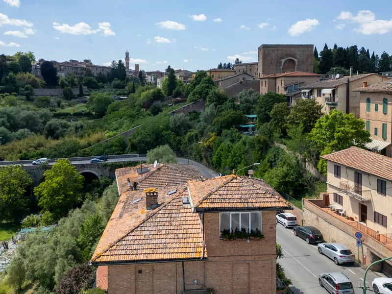
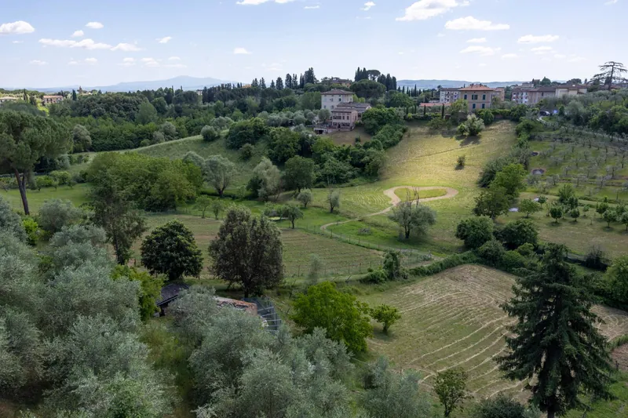

Siena · Toscana
La Finestra
sul Verde
Un appartamento con terrazza affacciato su una valle di ulivi,
a due passi dalle mura di Siena.
La casa
Il verde della valle,
Siena a due passi
La Finestra sul Verde è un appartamento accogliente, arredato con cura e pieno di dettagli, pensato per vivere Siena con calma.
Dalle finestre lo sguardo spazia su una valle di ulivi e orti, con il viadotto e le mura della città da un lato e le colline fino al Monte Amiata dall'altro. La terrazza con il pergolato è il posto ideale per la colazione al mattino e per un calice di vino al tramonto.
Il centro storico, con i palazzi medievali, le contrade e Piazza del Campo, si raggiunge a piedi.
- La terrazza con il pergolato
- Le finestre sul verde
- La camera matrimoniale
- Zona pranzo e soggiorno
- La cucina
- Le colline fino al Monte Amiata
- Il bagno
- La casa e il viadotto
In breve
Tutto quello che serve sapere
Ospiti
Fino a 4
Camera matrimoniale e divano letto matrimoniale
Check‑in
16:00 – 22:00
Arrivi fuori orario da concordare
Check‑out
Entro le 10:00
Con calma, dopo l'ultima colazione in terrazza
Centro
1,3 km
da Piazza del Campo, a piedi
Gli spazi
Semplice, curata, accogliente
- Cameraletto matrimoniale, armadio, libreria
- Soggiornodivano letto matrimoniale
- Cucinapiano cottura, frigorifero, fornetto, macchina da caffè, bollitore
- Bagnodoccia, bidet, asciugamani
- Terrazzapergolato, divanetti, fioriere
Servizi
- Wi‑Fi gratuito
- Aria condizionata
- Terrazza panoramica
- Cucina attrezzata
- Macchina del caffè
- Noleggio biciclette
- Biancheria e asciugamani
- Assistenza 24 ore su 24

«Dalle finestre, le colline fino al Monte Amiata.»
Dicono di noi
Le parole dei nostri ospiti
10/10
Splendida casa a 200 m dal centro storico
Ottima posizione a 200 m da porta Pispini. Nelle vie adiacenti abbiamo trovato comodamente parcheggio gratuito. La casa è molto accogliente, arredata con gusto e pulitissima. Ottimi i materassi e i cuscini. Splendida veduta nella valle… proprio una finestra sul verde.
10/10
Beautiful, stylish, home-like accommodation
The one you don't want to leave from. Phantastic view and location. Perfect communication and entry instructions. Free parking close to the apartment, 15 mins walking to city centre. Very clean. Thank you for wonderful stay!!!
10/10
Il posto migliore dove soggiornare a Siena!
Appartamento fantastico vicino al centro storico e con una vista INCREDIBILE! Letto comodissimo! Faceva molto caldo, ma l'aria condizionata è stata una vera manna. I proprietari sono stati gentilissimi con noi!
10/10
Un gioiello fuori le mura
Comoda e spaziosa sistemazione per una famiglia di 4 persone. Tutti gli utensili disponibili e proprietari pronti a rispondere a chiarimenti ed esigenze. Pulitissima.
10/10
Cute property with lovely view and very helpful host
Lovely property, most friendly hostess, love the location, air condition to work just fine in a heat wave. Would love to return. Very accommodating with check in out times.
10/10
Posizione ottima, pulizia, parcheggi bianchi
Ottima posizione appena fuori dalla porta che accede al centro, zona di parcheggi bianchi non a pagamento (da non sottovalutare a Siena), casa pulita e funzionale con bella vista su paesaggio senese.
Estratti di recensioni reali degli ospiti su Booking.com, tutte con voto 10/10.
Prenota direttamente
Scegli le date del tuo soggiorno
Prenotando qui non paghi commissioni ai portali. Puoi pagare subito online, oppure versare un piccolo acconto e saldare all'arrivo.
Dove siamo
Siena, a passo lento
La casa si trova appena fuori dalle mura, in una zona tranquilla affacciata sul verde: il centro storico si raggiunge a piedi, il Chianti in pochi minuti d'auto.
- Porta Pispini, ingresso al centro200 m
- Piazza del Campo1,3 km · 15 min a piedi
- Piazza Salimbeni · Palazzo Chigi‑Saracininei dintorni
- Greve in Chianti42 km
- Aeroporto di Firenze76 km
La Finestra sul Verde
Via Girolamo Gigli, Siena
Guide: dormire a Siena per il Palio · Strade Bianche.
Le istruzioni di arrivo vengono inviate con la conferma della prenotazione.
Apri in Google MapsDomande frequenti
Le vostre domande,
le nostre risposte
Quante persone può ospitare l'appartamento?
Fino a 4: due nella camera matrimoniale e due sul divano letto matrimoniale del soggiorno. Il prezzo è per 2 ospiti; dal terzo ospite si aggiunge un piccolo supplemento a notte, indicato nel preventivo.
Come funziona il pagamento?
Puoi pagare subito online l'intero soggiorno, oppure versare un acconto e saldare all'arrivo, in contanti o con carta. I pagamenti sono gestiti in sicurezza da Stripe.
Posso cancellare la prenotazione?
Sì, gratuitamente fino a 7 giorni prima dell'arrivo, con rimborso completo. Tutti i dettagli sono nei termini e condizioni.
A che ora sono check‑in e check‑out?
Il check‑in è dalle 16:00 alle 22:00, il check‑out entro le 10:00. Se arrivi più tardi scrivici: troviamo una soluzione.
L'imposta di soggiorno è inclusa?
Sì, il totale che vedi prima di pagare comprende già l'imposta di soggiorno del Comune di Siena.
C'è parcheggio?
Nelle vie vicine ci sono parcheggi gratuiti a strisce bianche, come raccontano molti nostri ospiti: a Siena non è scontato.
Sono ammessi animali?
Ci dispiace, gli animali non sono ammessi.
Come si raggiunge il centro?
A piedi: Piazza del Campo è a circa 1,3 km. Le indicazioni dettagliate arrivano con la conferma della prenotazione.